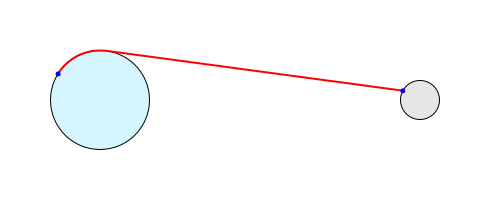

Distances to points on Earth are based on great circle distances from your current position at sea level (on a WGS84 reference ellipsoid). Distances to points on the Moon are based on the shortest path from your current position to the destination lunar point that avoids passing through the Earth. Thus if the Moon is currently above your local horizon this is a straight line; if the Moon is currently below your local horizon it is the distance from your current position to the nearest point on Earth where the destination lunar point is above the horizon plus the distance from there to the destination lunar point, as shown in red on the diagram below. (Distances to points on the far side of the Moon are not currently supported.)
